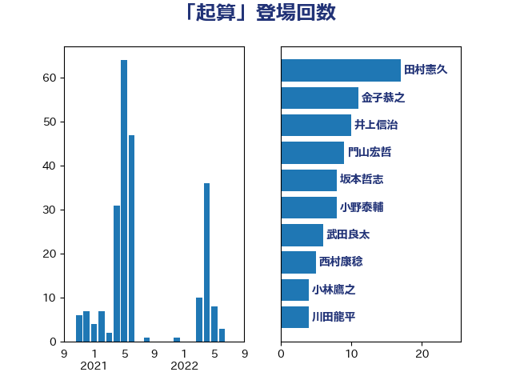

単語「起算」

| 田村憲久 | 自由民主党 | 17 回 |
| 金子恭之 | 自由民主党 | 11 回 |
| 井上信治 | 自由民主党 | 10 回 |
| 門山宏哲 | 自由民主党 | 9 回 |
| 坂本哲志 | 自由民主党 | 8 回 |
| 小野泰輔 | 日本維新の会 | 8 回 |
| 武田良太 | 自由民主党 | 6 回 |
| 西村康稔 | 自由民主党 | 5 回 |
| 小林鷹之 | 自由民主党 | 4 回 |
| 川田龍平 | 立憲民主党 | 4 回 |
| 篠原孝 | 立憲民主党 | 4 回 |
| 宮本徹 | 日本共産党 | 3 回 |
| 岩屋毅 | 自由民主党 | 3 回 |
| 木原誠二 | 自由民主党 | 3 回 |
| 牧島かれん | 自由民主党 | 3 回 |
| 福島みずほ | 社会民主党 | 3 回 |
| 逢沢一郎 | 自由民主党 | 3 回 |
| 佐々木さやか | 公明党 | 2 回 |
| 小里泰弘 | 自由民主党 | 2 回 |
| 林芳正 | 自由民主党 | 2 回 |
| 柳ヶ瀬裕文 | 日本維新の会 | 2 回 |
| 森山浩行 | 立憲民主党 | 2 回 |
| 浮島智子 | 公明党 | 2 回 |
| 遠藤利明 | 自由民主党 | 2 回 |
| 高鳥修一 | 自由民主党 | 2 回 |
| 下野六太 | 公明党 | 1 回 |
| 佐藤茂樹 | 公明党 | 1 回 |
| 倉林明子 | 日本共産党 | 1 回 |
| 古川康 | 自由民主党 | 1 回 |
| 吉川沙織 | 立憲民主党 | 1 回 |
| 大西健介 | 立憲民主党 | 1 回 |
| 宮下一郎 | 自由民主党 | 1 回 |
| 山田勝彦 | 立憲民主党 | 1 回 |
| 打越さく良 | 立憲民主党 | 1 回 |
| 新藤義孝 | 自由民主党 | 1 回 |
| 東国幹 | 自由民主党 | 1 回 |
| 柚木道義 | 立憲民主党 | 1 回 |
| 梅谷守 | 立憲民主党 | 1 回 |
| 橋本岳 | 自由民主党 | 1 回 |
| 矢倉克夫 | 公明党 | 1 回 |
| 磯崎仁彦 | 自由民主党 | 1 回 |
| 若宮健嗣 | 自由民主党 | 1 回 |
| 西村智奈美 | 立憲民主党 | 1 回 |
| 逢坂誠二 | 立憲民主党 | 1 回 |
| 須藤元気 | 無所属 | 1 回 |
| 高木かおり | 日本維新の会 | 1 回 |